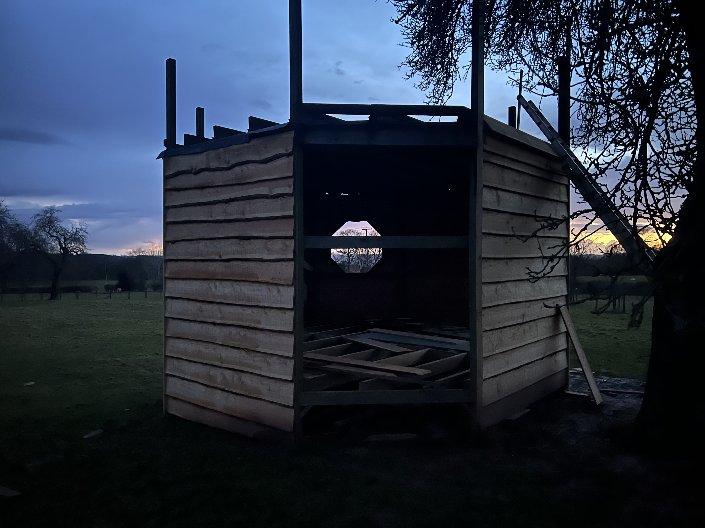
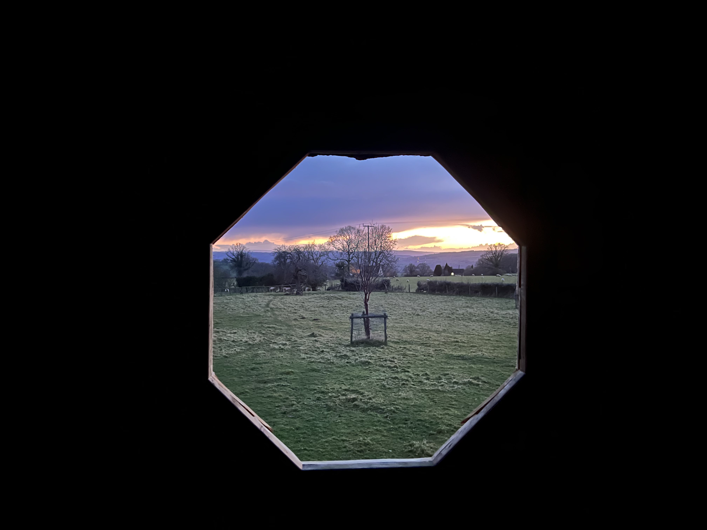
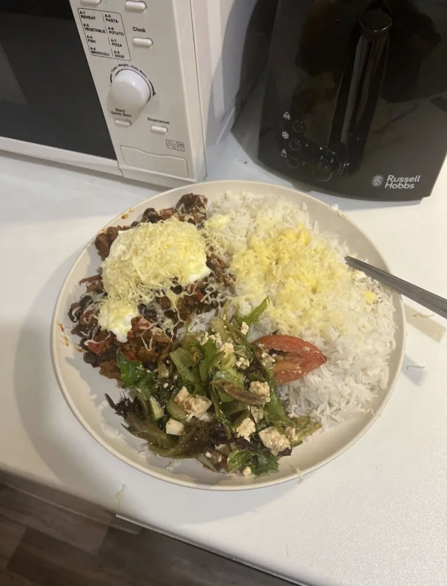
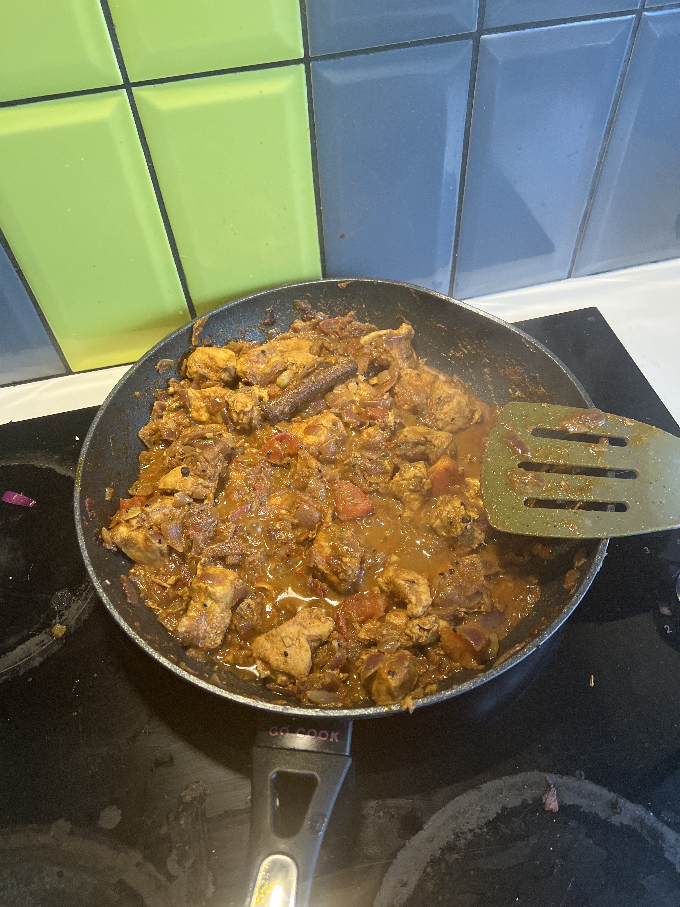
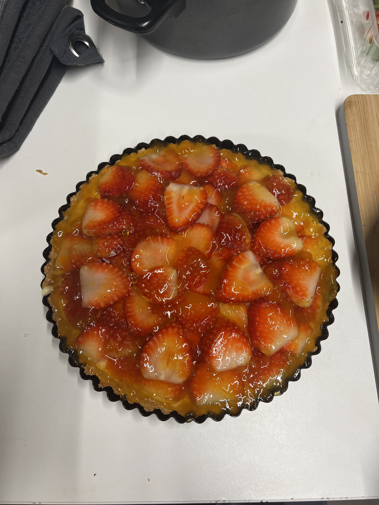
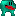

Who Am I?
I love boardgames, gaming, cooking and baking! Curries and tarts are my favourite thing to make. I am also the "boardgames custodian" for Cardiff Regular and Irregular
tabletop society. I happily host 2 boardgames events a week and have also organised the boardgame betting tournament for Cardiff Universities Nerd Varsity.



This is a construction that me and my dad have been working on at home. It is still under construction but it has been a great project. if it isnt visible, it is a treehouse
yes it is a little large, and also unfinished, but it is something that i am proud of having done.



Above are some meals i am proud of and a very lovely strawberry tart. just a few examples of all the lovely food i like to make (i know a little self inflating).

me feeding the ducks and geese.
What Am I?
I am a nerd at heart, i love anything to do with computers especially programming (and gaming). one of my favourite projects i have done is my game "froggy fighters".
it is a two player versus fighting game with frogs. players hit eachother with their tongues to damage eachother and try to avoid their opponets tongue. playtesters enjoyed the game,
and it won me the Ludlow college best computer science project of 2022, which i was and still am ery proud about. Below are some images of the frogs, linked is a video of the game
and again here, if you do watch, these are from early in development, the map is also intentionally made to look jarring, for
comedic effect, plus it is also meant to be "swamplike" and i think it somewhat achieves the effect.

Above are the two frogs, they hate each other. Another project i want to talk about is my Sudoku solver. it is a brute force recusie solver, with a bespoke but fairly
haphazardly assembled verifier function. The solver is fairly simple, but working in a recursive manner is particuarly difficult to think about. which made this quite a challenge
for me. Having said that, i do believe that i learned alot from writing it. I also enjoyed making the verifier. it works by row wise checking the sudoku for errors, it then turns the matrix
of the board into a column wise matrix, and a matrix of sqaures - the squares being the 3 x 3 sudoku squares. then performs the same verification algorithm for these, to fully verify the board.
if the checker reports an issue in the board, the solver changes the numbers to match until the right ones are found.